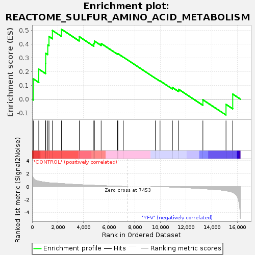
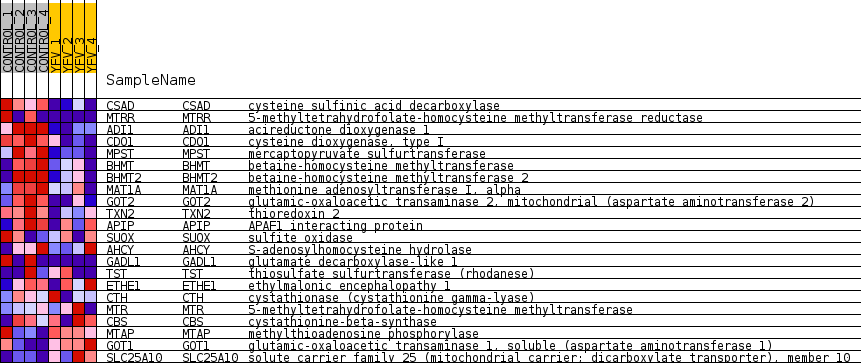
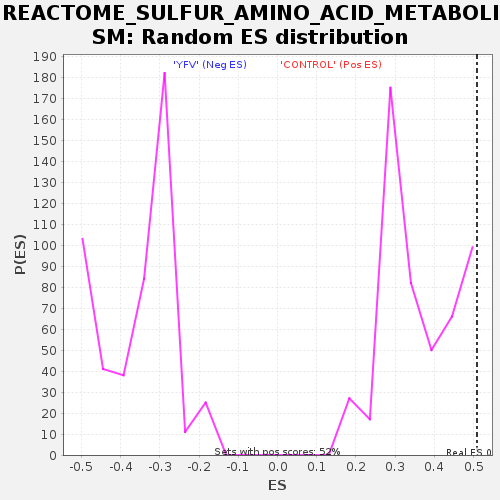

| Dataset | MATRIZ_GSE99081_collapsed_to_symbols.gsea_CLASE_99081.cls#CONTROL_versus_YFV |
| Phenotype | gsea_CLASE_99081.cls#CONTROL_versus_YFV |
| Upregulated in class | CONTROL |
| GeneSet | REACTOME_SULFUR_AMINO_ACID_METABOLISM |
| Enrichment Score (ES) | 0.50862986 |
| Normalized Enrichment Score (NES) | 1.3941357 |
| Nominal p-value | 0.07364341 |
| FDR q-value | 1.0 |
| FWER p-Value | 1.0 |

| SYMBOL | TITLE | RANK IN GENE LIST | RANK METRIC SCORE | RUNNING ES | CORE ENRICHMENT | |
|---|---|---|---|---|---|---|
| 1 | CSAD | cysteine sulfinic acid decarboxylase | 92 | 1.303 | 0.1481 | Yes |
| 2 | MTRR | 5-methyltetrahydrofolate-homocysteine methyltransferase reductase | 518 | 0.823 | 0.2191 | Yes |
| 3 | ADI1 | acireductone dioxygenase 1 | 1049 | 0.631 | 0.2609 | Yes |
| 4 | CDO1 | cysteine dioxygenase, type I | 1059 | 0.627 | 0.3343 | Yes |
| 5 | MPST | mercaptopyruvate sulfurtransferase | 1220 | 0.591 | 0.3943 | Yes |
| 6 | BHMT | betaine-homocysteine methyltransferase | 1314 | 0.569 | 0.4557 | Yes |
| 7 | BHMT2 | betaine-homocysteine methyltransferase 2 | 1580 | 0.513 | 0.4999 | Yes |
| 8 | MAT1A | methionine adenosyltransferase I, alpha | 2288 | 0.443 | 0.5086 | Yes |
| 9 | GOT2 | glutamic-oxaloacetic transaminase 2, mitochondrial (aspartate aminotransferase 2) | 3677 | 0.269 | 0.4548 | No |
| 10 | TXN2 | thioredoxin 2 | 4809 | 0.174 | 0.4056 | No |
| 11 | APIP | APAF1 interacting protein | 4851 | 0.171 | 0.4232 | No |
| 12 | SUOX | sulfite oxidase | 5378 | 0.123 | 0.4053 | No |
| 13 | AHCY | S-adenosylhomocysteine hydrolase | 6657 | 0.029 | 0.3300 | No |
| 14 | GADL1 | glutamate decarboxylase-like 1 | 6687 | 0.027 | 0.3313 | No |
| 15 | TST | thiosulfate sulfurtransferase (rhodanese) | 7103 | 0.005 | 0.3064 | No |
| 16 | ETHE1 | ethylmalonic encephalopathy 1 | 9603 | -0.008 | 0.1532 | No |
| 17 | CTH | cystathionase (cystathionine gamma-lyase) | 9968 | -0.024 | 0.1335 | No |
| 18 | MTR | 5-methyltetrahydrofolate-homocysteine methyltransferase | 10933 | -0.096 | 0.0855 | No |
| 19 | CBS | cystathionine-beta-synthase | 11420 | -0.141 | 0.0722 | No |
| 20 | MTAP | methylthioadenosine phosphorylase | 13308 | -0.340 | -0.0041 | No |
| 21 | GOT1 | glutamic-oxaloacetic transaminase 1, soluble (aspartate aminotransferase 1) | 15110 | -0.656 | -0.0377 | No |
| 22 | SLC25A10 | solute carrier family 25 (mitochondrial carrier; dicarboxylate transporter), member 10 | 15634 | -0.908 | 0.0373 | No |

